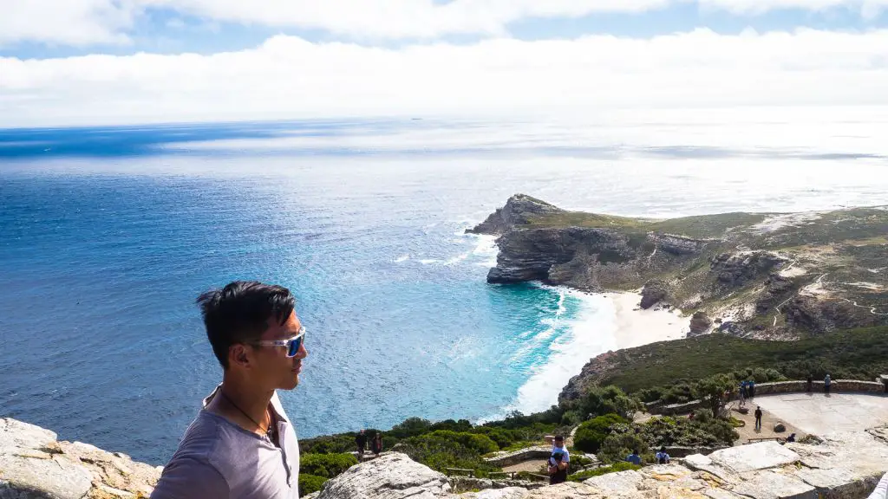

If there's one thing I tell my people not to miss when visiting Cape Town is a day trip to the absolutely stunning Cape Point. Cape Point is home to the famous Cape Point lighthouse as well as the Cape of Good Hope where the Indian and Atlantic oceans meet. It is not the southern most point of South Africa, that honor goes to Cape Aghulas but that is a 3 hour drive from Cape Town in Johannesburg.
Cape Point, along with visiting Boulders beach home to the African penguin colony, Muizenberg beach, and the Chapman’s peak drive make for the absolute perfect day trip from Cape Town. If this sounds like something you’re keen to do, then all you’ll need to know about planning the day will be on this page
So now that you're keen and ready for visiting Cape Point, this is how I would arrange the day. This is of course really only applicable if you’re self-driving or you have a private driver taking you around. If you go on an organized tour, then you’ll follow whatever schedule they’ve laid out for you.
If you're not keen for driving, then rest assured, there are many tours you can book that will take you to most of these places. This is what I do when I plan honeymoons for my readers to the Rainbow Nation as most honeymooners aren’t keen to drive on the other side of the road. If you are keen for driving, rest assured that the roads around Cape Town are in perfect condition and the traffic is pleasant.
On Viator, I normally book this tour for my readers as it visits all the main sights I’ve listed below, as well as a wine farm in Constantia. It is a bit rushed for my liking but it is a fair price for what it is.
Alternatively, you could just book a private driver for the day and tell them to make all the stops listed on this post. They may even have more insider tips than me and take you to cool spots I’ve never heard of before! My preferred tour with be the small group Instagram Cape Point tour that visits all the places that I highlight on this itinerary and in a small group setting.